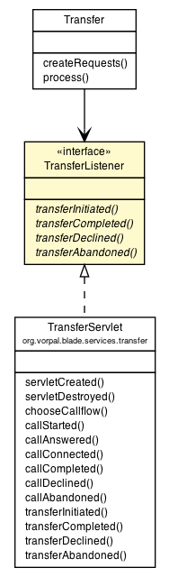

|
||||||||||
| PREV CLASS NEXT CLASS | FRAMES NO FRAMES | |||||||||
| SUMMARY: NESTED | FIELD | CONSTR | METHOD | DETAIL: FIELD | CONSTR | METHOD | |||||||||

public interface TransferListener
| Method Summary | |
|---|---|
abstract void |
transferAbandoned(javax.servlet.sip.SipServletRequest request)
This method is called to indicate that the transferee has hung up during the transfer process. |
abstract void |
transferCompleted(javax.servlet.sip.SipServletResponse response)
This method is called after the transfer target has accepted the call. |
abstract void |
transferDeclined(javax.servlet.sip.SipServletResponse response)
This method is called to indicate that the transfer target did not accept the call. |
abstract void |
transferInitiated(javax.servlet.sip.SipServletRequest request)
This method is invoked by one of the Transfer callflows to indicate an INVITE is being sent to the transfer target. |
| Method Detail |
|---|
void transferInitiated(javax.servlet.sip.SipServletRequest request)
throws javax.servlet.ServletException,
java.io.IOException
This method is invoked by one of the Transfer callflows to indicate an INVITE is being sent to the transfer target. You may modify the intended destination of the INVITE by modifying the request URI or the 'To' header. To modify the 'To' header, use a syntax similar to:
request.getAddressHeader("To").setURI(sipFactory.createURI("sip:target2@vorpal.net"));
request -
javax.servlet.ServletException
java.io.IOException
void transferCompleted(javax.servlet.sip.SipServletResponse response)
throws javax.servlet.ServletException,
java.io.IOException
response - a modifiable successful response
javax.servlet.ServletException
java.io.IOException
void transferDeclined(javax.servlet.sip.SipServletResponse response)
throws javax.servlet.ServletException,
java.io.IOException
response - a non-modifiable error response
javax.servlet.ServletException
java.io.IOException
void transferAbandoned(javax.servlet.sip.SipServletRequest request)
throws javax.servlet.ServletException,
java.io.IOException
request - either a cancel or bye request
javax.servlet.ServletException
java.io.IOException
|
||||||||||
| PREV CLASS NEXT CLASS | FRAMES NO FRAMES | |||||||||
| SUMMARY: NESTED | FIELD | CONSTR | METHOD | DETAIL: FIELD | CONSTR | METHOD | |||||||||